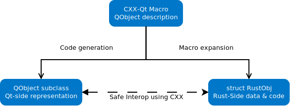

Rust 中的 QObjects
用正确工具做正确事。
如果你只有一把锤子，那么每个问题看起来都像钉子。
不要用刀来作枪战。
这样的意见有很多。我们使用 CXX-Qt 的目标是，在构建现代 GUI 应用程序时，让使用正确的工具来做任何有必要的工作成为可能。
那么对于常规的 Qt 应用程序，我们的工具箱中有什么？
- QML - 一种声明性、灵活、动态类型、解释性语言，旨在定义高响应且美观的 GUI 布局和小部件时，能够快速迭代构建。
- C++ - Qt 的传统后端, 一种具有强大类型系统的快速、低级语言。C++ 提供了丰富的生态系统、许多 Qt 特定的库和裸机性能。使用 C++ 的代价是开发速度慢，非常容易出错，并且很容易导致内存问题，这会使您的应用程序立即崩溃并导致安全问题
值得注意的是，没有一种后端语言可以让我们摆脱 C++ 的问题，并为我们提供一种快速编写后端代码的安全方法。这当然是 Rust 的用武之地。虽然 Rust 没有那么丰富的生态系统，但它通常比 C++ 开发更快，具有简单的依赖管理，最重要的是安全的内存访问。因此，它是替代 C++ 来编写为 GUI 提供数据的后端业务逻辑代码的理想候选者。
但是，C++ 和 QML 在 Qt 应用程序中仍然占有一席之地。出于这个原因，Rust、C++ 和 QML 都应该能够相互补充。CXX-Qt 旨在通过使用 Qt 元对象系统，轻松地将所有三种语言相互融合。
Qt 的设计本质上是面向对象的，对于 C++ 和 QML 也是如此。因此，为了更好地与 Qt 融合，Rust 需要能够使用自己的 QObject 子类和实例来扩展 Qt 对象系统。这正是 CXX-Qt 做的事情。
由于 Rust 不提供具有继承和多态性的类，因此 CXX-Qt 在定义新的 QObject 子类时使用了 Rust 模块。
这些 CXX-Qt 模块由多个部分组成：
- 一个
Data结构体- 定义哪些属性将在 QObject 子类中.
- 需要实现
Defaulttrait. - 这些数据将作为 CXX-Qt 生成的 C++ 子类中的属性存在。
- 一个
RustObj结构体- 一个普通的 Rust 结构。
- 每个类实例创建一个结构实例。
- 包含任何 Rust-only 的数据。
- 需要实现
Defaulttrait.
RustObj结构体的impl(可选):- 包含任何 Rust 代码。
- 标有
#[invokable]的函数可以在 QML 和 C++ 中调用。
然后，CXX-Qt 会将这个 Rust 模块扩展为两个独立的部分：
- 与模块同名的 C++ QObject 子类
- Rust 结构体
RustObj

CXX-Qt 还使用 CXX 库生成 C++ QObject 子类和 RustObj 结构体交互所需的代码。有关更多详细信息，请参阅概念：桥接页面。此外，CXX-Qt 为我们封装了一些 Qt 类型，因此 Rust 可以轻松地使用它们。有关可用类型的列表，请参阅概念：Qt 类型页面。
这里重要的一点是 CXX-Qt 生成的任何子类的对偶性。这些类由纯粹存在于 C++ 端的实际 QObject 子类实例以及 RustObj 结构体的实例组成。因此，生命周期和 GUI 数据由 C++ 端的 QObject 实例管理。通常这将由 QML 实例化，并且生命周期将直接与相应的 QML 小部件相关联。任何声明在 Data 结构体中的属性都将存储为 C++ QObject 的成员。
然而，生成的 QObject 子类将遵循 RustObj 结构体的任何行为，然后在 Rust 中定义。该 RustObj 结构体可以导出标记为 #[invokable] 的函数，这将在 C++ 端生成一个对应的函数，该函数将直接调用适当的 Rust 方法。这些 Rust 方法可以通过名为 CppObj 的封装引用 C++ 对象的成员，因此 Rust 代码可以修改它们。
现在我们已经了解了这一切的理论，让我们开始编写我们的第一个 CXX-Qt 模块吧。